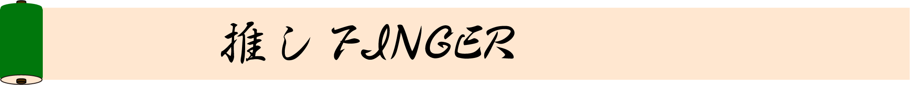
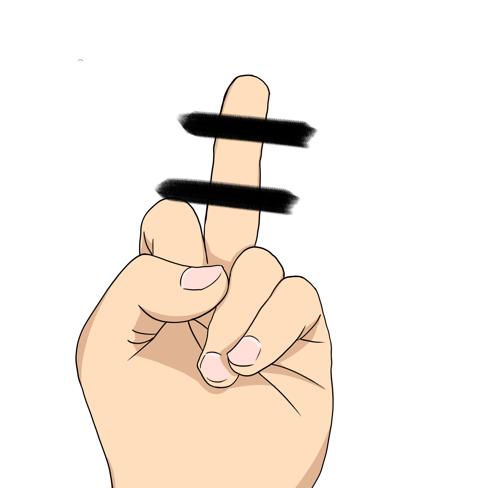

Top
承認欲求
average１
Central Fossa Magna
Time Traveler
契

絶対に立ててはならない禁断の指である中指。 海外では一番よく立てられている指でもある。 一方物を指すとき使いやすいという特性も持っている。 指を鳴らしたときに最も音が出るのもこの指である。 指の中で最も長く、手のちょうど真ん中に位置するこの指は、 まさに手の中央を分断する”大きな溝”と呼んでも過言ではない。 あと指の中で一番臭い。